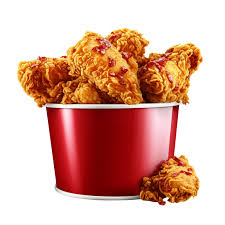

Fried Chicken

Description
Fried chicken is a belovd dish featuring pieces of chicken coated in seasoned batter and deep-fried until golden and crispy. Juicy on the inside and crunchy on the outside, it's comfort food staple enjoyed worldwide.
Perfect on its own or paired with sides like mashed potatoes and coleslaw, fried chicken is an irresistible treat for any occasion.
Ingredients
- Chicken pieces
- Buttermilk
- All-purpose flour
- Cornstarch (optional, for extra crispiness)
- Salt
- Black pepper
- Paprika
- Garlic powder
- Onion powder
- Cayenne pepper (optional, for heat)
- Baking powder (optional, for extra crispiness)
- Vegetable oil (for frying)
Steps
Prepare Chicken:
- Rinse and pat dry chicken pieces.
- Season generously with salt and pepper.
Marinate:
Soak chicken in buttermilk for at least 1 hour (preferably overnight).
Prepare Coating:
In a bowl, mix flour, cornstarch, salt, pepper, paprika, garlic powder, onion powder and cayenne pepper (if using).
Coat Chicken:
- Remove chicken from buttermilk, letting excess drip off.
- Dredge chicken in flour mixture, pressing to adhere.
Fry Chicken:
- Heat vegetable oil in a deep skillet or pot to 350 degrees.
- Carefully place chicken pieces in hot oil, frying in batches to avoid crowding.
- Fry for 12-15 minutes, turning occasionally, until golden brown and cooked through.
Drain and Serve:
- Transfer fried chicken to a wire rack or paper towels to drain excess oil.
- Serve hot, optionally with sides like mashed potatoes, coleslaw or biscuits.
Enjoy your crispy and DELICIOUS homemade Fried Chicken!